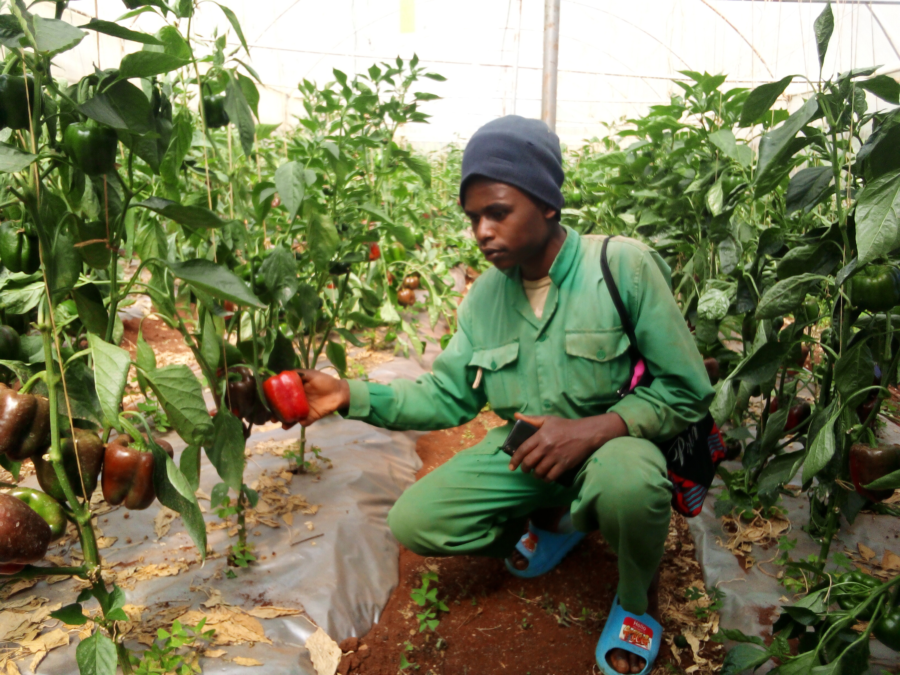

welcome to Kiama Green Acres,where nature's abundance meets farming.Nestled at the foot of the Majestic Karima Hill in Othaya,our farm ia a thriving paradise of fresh,high-quality produce.From the vibrant capsicums that glows under our beautifully designed green houses to the crisp,hearty cabbages swaying in the gentle breeze,every corner of Kiama Green Acres is dedicated to producing the finest farm-to-table delight. Our farm is a blend of tradition and innovation with a unique mix of dairy and fish farming working perfectly with nature. our cows are nurtured with care,providing fresh,deliciousmilk and dairy products.our fish farming operations deliver healthy,sustainable fish contributing to both the local food security and environmental wellbeing.we believe in farming that respects the land and nourishes the community. come visit us and experience the vibrant spirit of rural kenya,where every product is a reflection of our commitment to quality and sustainability.
